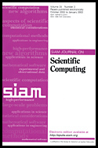

As in previous even-numbered years, a Special Issue of SIAM Journal on Scientific Computing (SISC) is planned. This single issue will be dedicated to recent progress in iterative methods. Submissions are encouraged in all aspects of iterative methods, including this year's highlighted topics.
Attendees and participants of the conference as well as the general community are invited to submit papers. The papers should meet the formatting and editorial requirements of SIAM Journal on Scientific Computing.
The deadlines, method of submission, guidelines, and any submission requirements will be announced at the conference and posted at this conference website once announced.
SISC has a web page located at https://www.siam.org.
